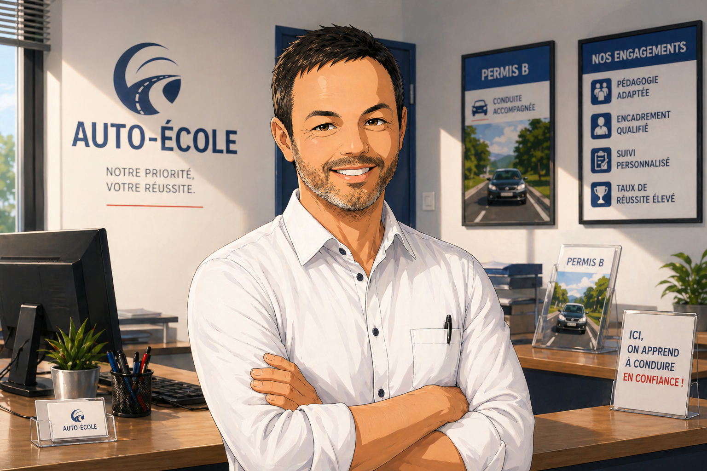
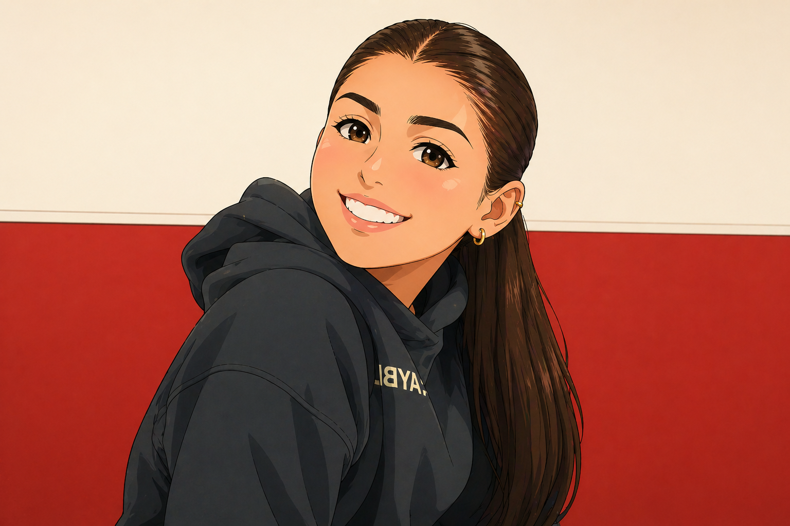
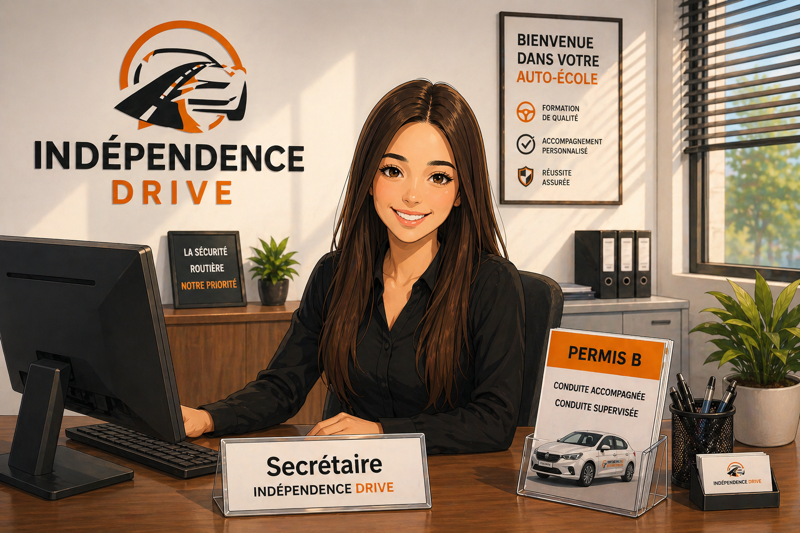
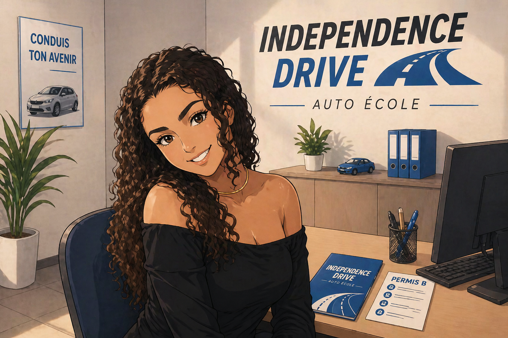
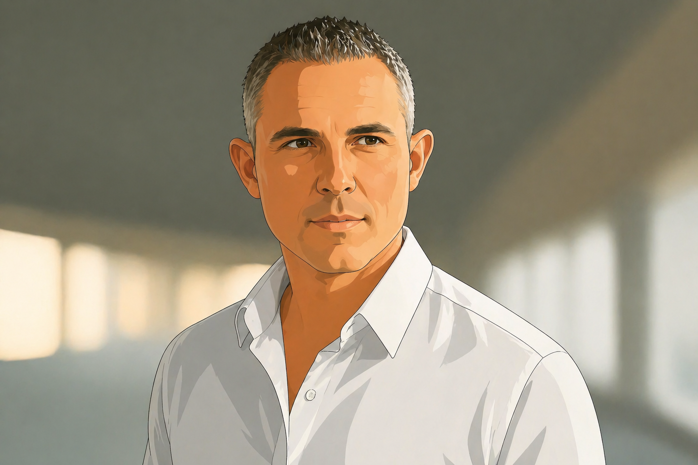
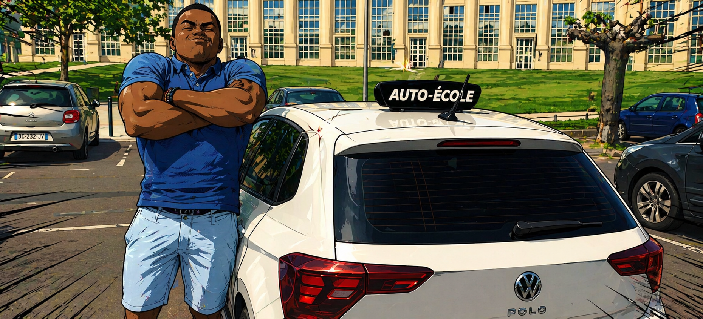

Independence Drive
Chez Independence Drive, notre équipe est à la fois pédagogue, bienveillante et efficace.
Chacun apporte sa personnalité, son expérience et son énergie, pour créer un équilibre idéal entre sérieux, accompagnement et bonne humeur.
Coordonnés et passionnés par leur métier, nos enseignants et secrétaires travaillent ensemble avec un objectif commun : vous amener à la réussite dans les meilleures conditions.
Deux points de rendez-vous sont à votre disposition pour plus de flexibilité :
📍 L'auto-école
📍 L'Esplanade de l'Europe
L'équipe de l'auto-école

Stéphane
Gérant & Enseignant de la conduite
Enseignant depuis 2004, Stéphane met son expérience au service de votre réussite avec patience, bonne humeur et stratégie.
N’ayant jamais quitté Montpellier, il connaît parfaitement les exigences de l’examen et les spécificités locales, un vrai atout pour vous préparer efficacement et même en anglais.
Arrangeant et à l’écoute, il s’adapte à chaque élève pour avancer au bon rythme, sans stress inutile.
Sa spécialité ? Les ronds-points… après quelques heures avec lui, même les plus complexes n’auront plus aucun secret pour vous.
📍 Place de l'europe
🚘 Skoda Fabia Essence Manuelle et automatique
Nissrine
Enseignante de la conduite
Nouvellement diplômée en 2026, Nissrine incarne une nouvelle génération de monitrices passionnées et engagées.
Déterminée, elle s’est battue pendant 3 ans pour exercer ce métier qu’elle aime, et met aujourd’hui toute son énergie au service de la réussite de ses élèves.
Fougueuse et motivée, elle accompagne avec patience, sourire et bienveillance, en créant une vraie relation de confiance.
Nissrine assure également des leçons de code et participe à l’accueil au bureau.
Avec elle, les élèves se sentent rapidement à l’aise… et entre de bonnes mains.
📍 Place de l'europe
🚘 Skoda Fabia Essence Manuelle et automatique

Chloé
Enseignante de la conduite
Fraîchement diplômée en 2026, Chloé allie rigueur et motivation pour accompagner ses élèves vers la réussite.
Jeune mais déjà très cadrée et précise dans sa formation, elle sait poser un cadre clair pour progresser efficacement.
Particulièrement à l’aise en salle, elle est une vraie référence pour les formations théoriques et le code.
Déterminée, elle est allée jusqu’à financer elle-même sa formation pour exercer ce métier qu’elle a choisi avec conviction.
📍 Place de l'europe
🚘 Skoda Fabia Essence Manuelle et automatique

Marwa
Secrétaire en alternance
Marwa vous accueille et vous accompagne dans vos démarches du quotidien.
Sous son masque de beauté (et même sous le maquillage 😄), se cache surtout une personne à l’écoute, empathique et toujours prête à aider.
Organisée et à l’aise en communication, elle saura vous guider pour vos rendez-vous, votre suivi ou toute question liée à l’auto-école.
Curieuse et ouverte sur le monde, elle s’intéresse aux différentes cultures et parle également arabe, un vrai plus pour échanger facilement.
📆 Auto école le jeudi et vendredi, Mercredi ou Samedi

Soraya
Secrétaire en alternance
Soraya vous accueille principalement les lundis et mardis, avec des présences ponctuelles les mercredis ou samedis.
Structurée et très à l’aise en communication, elle vous aide à y voir clair dans toutes vos démarches administratives.
Connexion, application, CPF… si quelque chose vous semble compliqué, elle est là pour vous simplifier la vie.
Respectueuse, organisée et à l’écoute, elle veille à accompagner chacun avec sérieux et bienveillance.
📆 Auto école le Lundi, Mardi, Mercredi ou Samedi
Enseignants indépendants
Partenaires d'Independence Drive, ils interviennent avec leurs propres véhicules.

Danilo
Enseignant de la conduite (indépendant)
Enseignant depuis 2013, Danilo accompagne ses élèves avec précision et efficacité.
Très observateur, il repère rapidement ce qui doit être corrigé et donne des consignes claires pour progresser vite.
Expert des trajectoires, il vous apprend à conduire de manière fluide et maîtrisée.
Expert des trajectoires, il vous apprend à conduire de manière fluide et maîtrisée.
Il intervient en tant qu’indépendant et vous forme à bord de sa Toyota Yaris hybride, idéale pour une conduite souple et confortable.
Il parle également anglais, espagnol et italien — pratique pour apprendre sans barrière.
📍 Place de l'europe
🚘 Toyota Yaris hybride Automatique
Yasmine
Enseignante de la conduite (indépendante)
Monitrice depuis 2023, Yasmine apporte une vraie touche de bonne humeur et de cool attitude à chaque leçon.
Patiente, rassurante et motivante, elle met rapidement ses élèves en confiance pour apprendre sans stress.
Passionnée de stylisme, elle soigne les détaills et l’ambiance est toujours agréable.
Dans sa voiture, ça sent bon… mais ça ne veut pas dire que toutes les mauvaises odeurs sont convertibles 😄
Petit bonus : elle aime les serpents — mais ils ne sont pas du voyage 🐍
📍 Auto école
🚘 Clio 5 diesel manuelle

Hervé
Enseignant de la conduite (indépendant)
Moniteur depuis 2014, Hervé allie expérience et bonne humeur pour accompagner ses élèves sans stress.
Très à l’aise en conduite commentée, il vous apprend à analyser, anticiper et comprendre la route en temps réel — un vrai plus pour le jour de l’examen.
Hervé privilégie une approche détendue et efficace.
Sa principale qualité ? Avoir plein de défauts — dont celui de vous faire progresser en gardant le sourire.
Avec lui, plus besoin de boule anti-stress : on peut directement mettre Hervé en boule.
📍 Place de l'europe
🚘 Volkswagen Polo 6 essence

Laurent
Enseignant de la conduite (indépendant)
Fort de 30 ans d’expérience en gendarmerie et moniteur depuis 2019, Laurent met sa patience et son expertise de la sécurité routière au service de votre réussite.
Grâce à son parcours, il maîtrise parfaitement la réglementation et vous apporte des explications claires et concrètes, essentielles pour réussir l’examen.
Spécialiste de l’accompagnement des publics DYS et TDAH, il propose une approche douce, adaptée et rassurante pour progresser en toute confiance.
📍 Gare SNCF de Béziers
📍 Avenue Clémenceau Beziers
🚘 Clio 5 Automatique
Frédéric
Enseignant de la conduite (indépendant)
Moniteur depuis 1974, Frédéric est le véritable vétéran de l’auto-école.
Fort de décennies d’expérience, il maîtrise les techniques de conduite et les subtilités du métier comme personne.
Expert en conseils précis, il transmet son savoir avec passion dans un dernier élan avant une retraite bien méritée (mais visiblement pas tout de suite 😄).
Entre rendez-vous médicaux et interventions dans plusieurs auto-écoles, il gère son planning avec une organisation redoutable.
📍 Auto école
🚘 Skoda Fabia Essence Manuelle